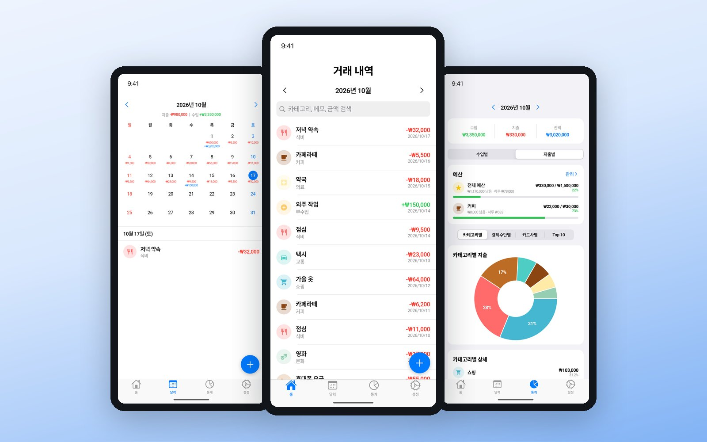
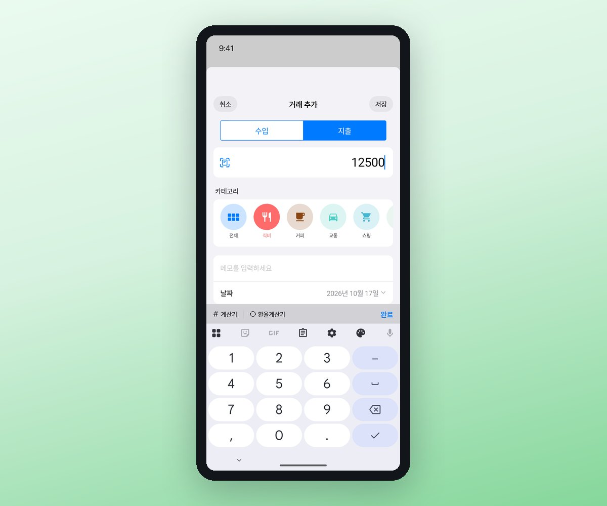
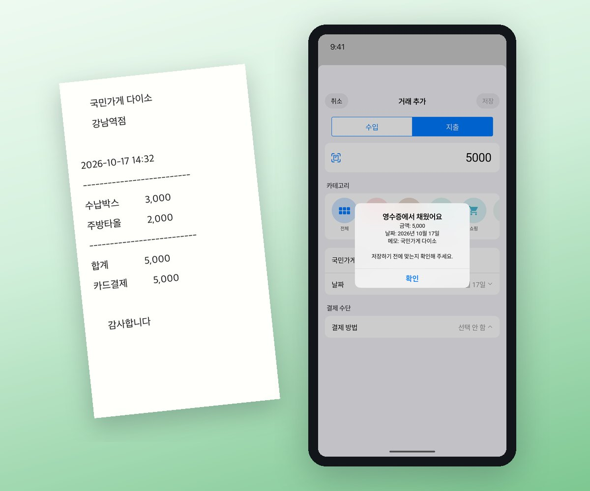
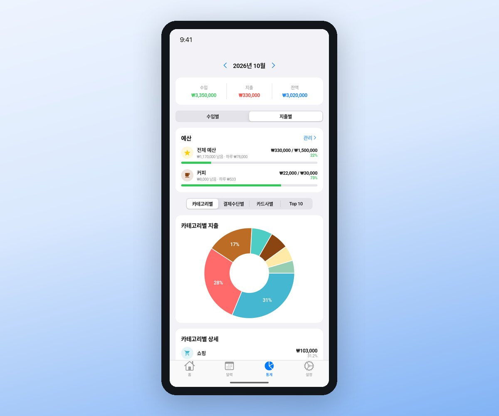
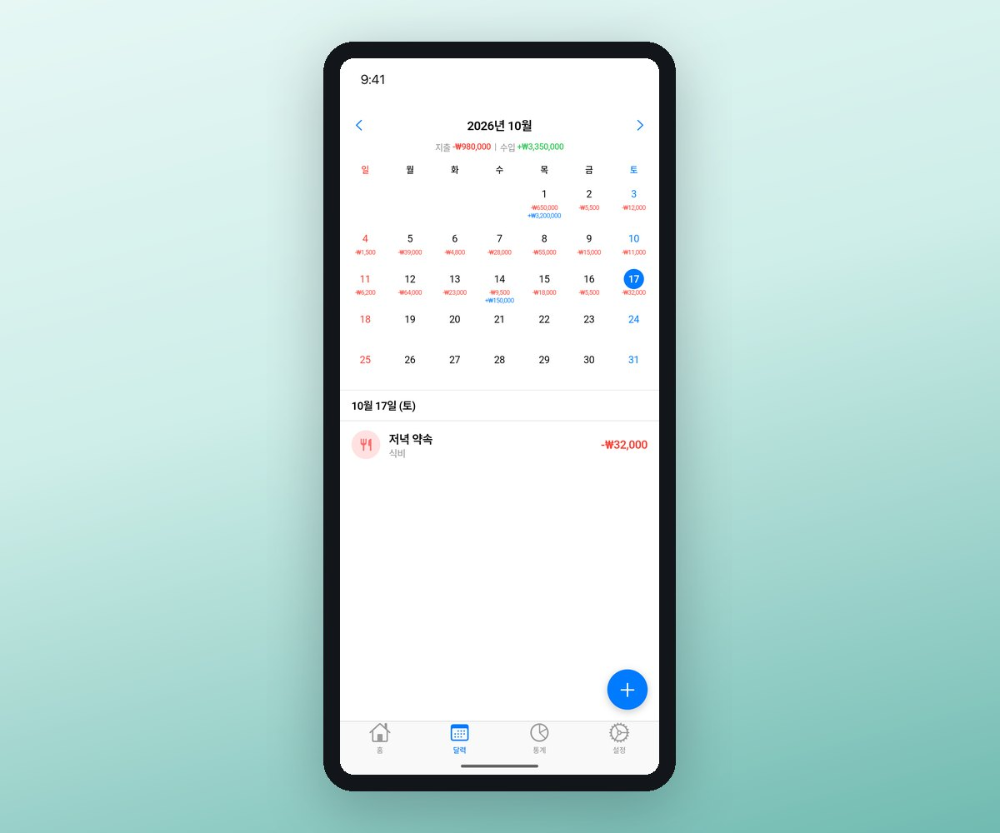
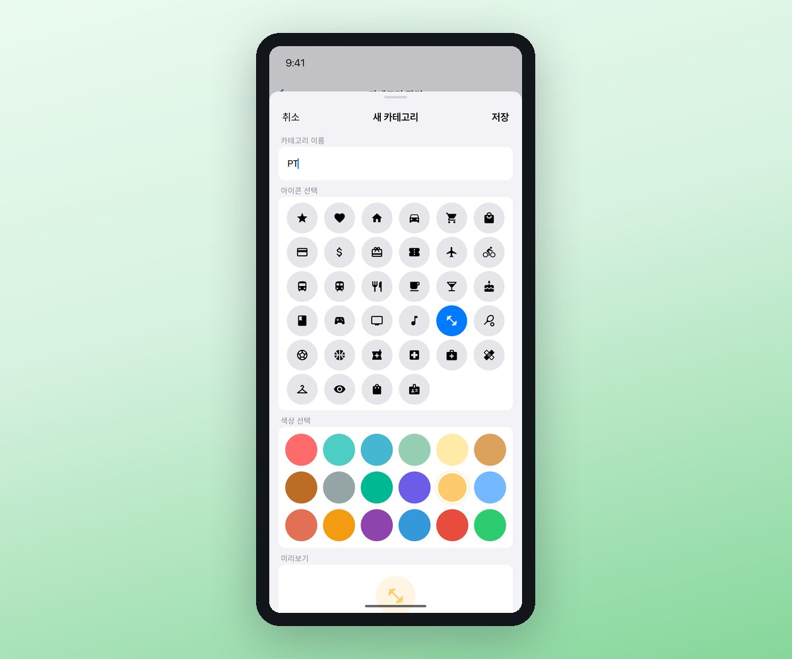
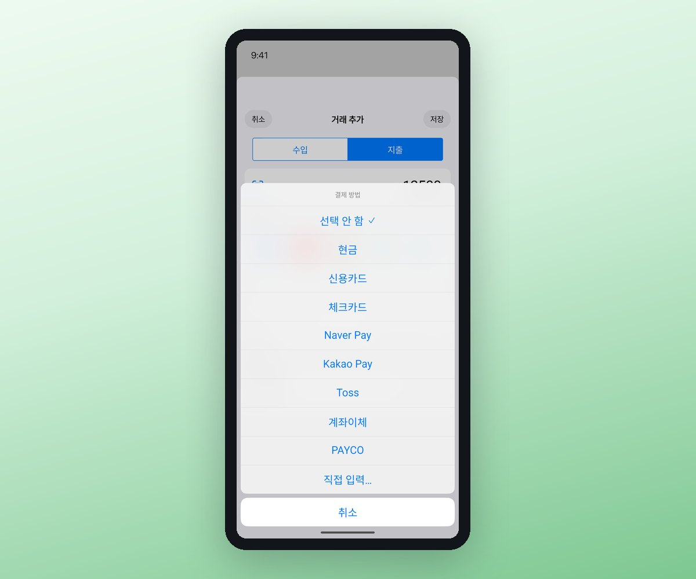
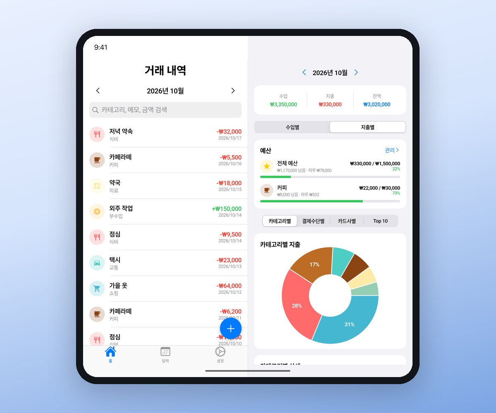

날짜, 금액, 카테고리만 누르면 끝. 영수증은 찍기만 하면 채워지고, 통계와 달력이 이번 달 돈이 어디로 갔는지 보여 줍니다. 가입도 계좌 연동도 없이, 기록은 폰 안에만 남습니다.


날짜, 금액, 카테고리, 결제 수단. 금액 칸에 계산기와 환율계산기가 붙어 있어 더치페이도, 외화 결제도 그 자리에서 정리합니다.

사진을 찍거나 앨범에서 고르면 금액, 날짜, 가게 이름을 읽어 채워 줍니다. 저장하기 전에 맞는지 확인만 하면 됩니다.

카테고리별·결제수단별·카드사별 도넛 차트와 가장 많이 쓴 Top 10. 이번 달 전체나 카테고리마다 예산을 정하면 남은 금액과 하루에 쓸 수 있는 금액까지 알려 줍니다.

달력의 날짜 아래에 그날 쓴 돈과 번 돈이 적힙니다. 날짜를 누르면 그날 기록만 모아 봅니다.

아이콘과 색을 골라 나만의 카테고리를 만듭니다. 기본 카테고리는 출발점일 뿐, 쓰는 방식에 맞게 늘려 가면 됩니다.

목록에 없는 결제수단이나 카드사는 이름을 직접 적으면 됩니다. 한 번 적은 이름은 다음부터 목록에 나타납니다.

펼친 폴더블 폰, 아이폰 듀오, 태블릿에서는 왼쪽에 거래 내역, 오른쪽에 통계를 함께 보여 줍니다. 한쪽에서 달을 넘기면 다른 쪽도 따라옵니다.
이런 분께
결제수단과 카드사, 메모까지 한 건 한 건 남기고 싶다면.
카테고리별 도넛과 Top 10으로 어디에 많이 쓰는지 바로 보입니다.
입력은 네 번의 탭, 영수증은 사진 한 장이라 오래 갑니다.
외화로 결제해도 그날 환율로 기본 통화에 맞춰 기록됩니다.
이번 달·카테고리별 한도와 남은 금액을 늘 확인할 수 있습니다.
계정도 은행 연결도 없이, 기록은 폰 안에만 남습니다.
넓은 화면에서는 내역과 통계를 한 화면에 나란히 봅니다.
개인정보
기록을 묶어둘 계정도, 보낼 서버도 없습니다. 모든 거래는 기기 안의 데이터베이스에 있고 앱을 지우면 함께 사라집니다. 영수증 사진도 폰 안에서만 읽고 저장하지 않습니다. 앱 밖으로 나가는 것은 환율을 물어볼 때 보내는 통화 코드, 영수증 인식(Google ML Kit)이 진단용으로 보내는 기기 모델·앱 버전 같은 정보, 그리고 앱이 무료라 붙는 배너 광고를 위해 Google AdMob이 수집하는 광고 식별자와 기기 정보입니다. 자세한 내용은 개인정보처리방침에 적어두었습니다.
App Store와 Google Play에서 무료입니다. 오프라인에서 동작하며 네트워크는 광고와 환율에만 씁니다.